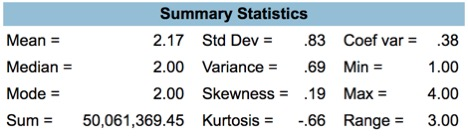

The frequency distribution table (right) shows that a staggering 72.5% of respondents are concerned with online credit card usage. Only 22.7% don’t show signs of concern, and a minimal 4.8% of respondents do not possess a credit card.
This data demonstrates the potential for further online security and user reassurance that financial systems such as PayPal may offer, as the vast majority of users are still “Concerned/Very concerned” with their online credit card usage.
The data has a slight positive skewness, as the mean is 0.17 greater than the median.
The standard deviation value also shows that the majority of the data points are relatively close to the mean, and that the data set is relatively packed together.
Confidence interval show small variation of how “concerned” users are when using credit cards. The data indicates that possible population upper and lower values are similar to sample data, thus, statistical information can be generalized. Looking at standard error it can also be said that part of population that do not use credit cards is two times less likely to vary from sample than people who are “concerned/not concerned” with credit card use.
However, no z-statistics can be seen. This can be due to the fact that expectations were not analyzed prior to data collection, or deviations from the expectations are too small to be recorded.
From the line chart we can also see that a sufficient number of respondents (17,6%) skipped the survey question.
SDA@Chass CIUS, 2012 - Person File, Variable ps_q02
Looking at ps_q01 or, “Concerned - conducting banking transactions over the Internet” there are a few points to consider.
Firstly “Not at all concerned”, coded as 1, is less than the combined values of “Concerned” and “Very Concerned”, coded as 2 and 3 respectively. 62% of respondents to the question had reservations regarding performing online banking transactions.
Furthermore the “Concerned” value was also greater than the “Not at all concerned” value on its own, albeit by a small amount. Ideally speaking both the sums of options 2 and 3 and, options 2 and 3 individually would be less than that of 1.
In other words, you want more people to not be concerned than people who are concerned.
Ultimately, this indicates that more can be done to convince people of their online safety and privacy.
Confidence intervals show that slight variation from the sample can be seen in the population. Estimated standard error of the population does not indicate weighty differences – it can be noticed that standard error is a little bit less likely to appear when generalizing data gathered about “very concerned” respondents.
No Z-statistic can be explained as no existence of prior research expectations or unnoticeable variations.
Missed data (17,9%) shows that a sufficient number of respondents did not answer the survey question about their banking transactions, thus, more or less variation from the sample can be seen in population data then it is estimated.
By examining the online banking transaction variable population and the online credit card use variable population, it is evident that there is a similar trend shown within the frequency distribution tables, as the majority of both populations lean towards the “concerne d/very concerned” side of the distribution. However, the credit card population shows a slight positive skewness to the right, whilst the online banking transactions demonstrate a slight negative skewness to the left, showing that respondents are relatively more sensitive towards credit card use than banking transactions. Due to the fact that similar amount of information is missed from the data, it can be said that generalization of both variables is appropriate and can be cross-analyzed.
SDA@Chass CIUS, 2012 - Person File, Variable ps_q01
Overall, data gathered from sample that show how concerned people are about credit card use and online banking transactions has alike weight. The main difference between two variables is that there are more people who are concerned with credit card use. Ps_q02 or, “Concerned - using credit card over the Internet”, even has extra row for data that indicates that some people do not have credit card. It can be compared to ps_q01 or, “Concerned - conducting banking transactions over the Internet”, which does not have an extra row. This means that, in general, people are less likely to use credit cards than conduct online banking transactions.